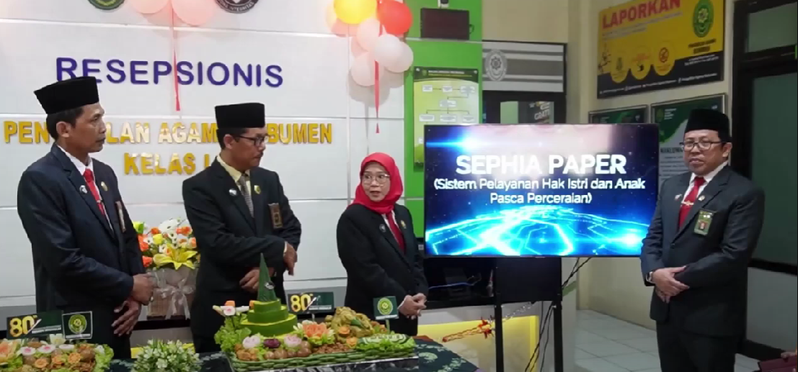

Tentang Sephia Paper
Sephia Paper (Sistem Pelayanan Hak Istri dan Anak Pasca-Perceraian) berfokus pada perlindungan hak-hak perempuan dan anak setelah perceraian. Melalui kerja sama dengan Pemerintah Kabupaten Kebumen, program ini menyediakan layanan advokasi dan pendampingan hukum bagi mereka yang rentan kehilangan hak. Sistem ini memastikan hak-hak dasar seperti nafkah, tempat tinggal, dan hak asuh anak tetap terlindungi pasca-perceraian. Inovasi ini mengedepankan asas keadilan, kepastian, dan kemanfaatan hukum agar perempuan dan anak tidak menjadi korban dalam proses hukum. Ketua PA Kebumen Ariani, S.Ag., M.H., menegaskan inovasi ini sejalan dengan visi Mahkamah Agung untuk mewujudkan peradilan yang ramah terhadap kelompok rentan. “Kami berkomitmen menghadirkan layanan hukum yang adaptif dan solutif. Sephia Paper adalah bukti nyata kolaborasi dan inovasi kami menjawab kebutuhan masyarakat, khususnya perempuan dan anak, untuk mendapatkan keadilan yang sejati,” ujar Ariani. Peluncuran inovasi ini menjadi langkah strategis menuju transformasi peradilan agama yang lebih modern, memanfaatkan teknologi untuk mempermudah akses keadilan. Ke depan, PA Kebumen berharap peradilan agama semakin inklusif dan berpihak pada perlindungan hak asasi manusia, terutama bagi kelompok rentan, serta mengedepankan keadilan substantif yang humanis